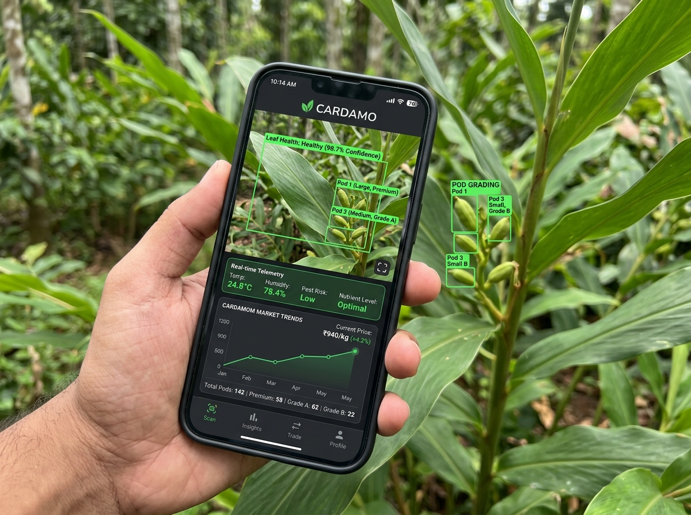

Department of Information Technology • Faculty of Computing • SLIIT
Empowering small and medium-scale cardamom farmers across the central highlands of Kandy, Badulla, and Matale. An integrated artificial intelligence decision support system combining field leaf disease diagnostics, smart pod maturity & capsule borer detection, objective quality grading, and harvest market forecasting.
Cardamom farmers in Sri Lanka face severe hurdles in remote highland plantations where traditional web portals and complex PDF manuals are impractical. Cardamo is engineered as an intuitive, mobile-first decision tool that delivers instant computer vision diagnostics directly at the farm level.

Addressing the systemic agricultural, ecological, and economic bottlenecks in Sri Lanka's high-value "Queen of Spices" cultivation.
Small- and medium-scale cardamom farmers in Kandy, Badulla, and Matale depend on cardamom as their primary livelihood. Presently, they rely strictly on manual observation and personal experience:
Cardamo introduces an integrated, machine learning–based mobile decision support framework tailored for real-field conditions:
Existing studies evaluate only 2 or 3 diseases under laboratory settings, completely overlooking chlorotic streak and vein clearing found in Sri Lankan highland climates.
Most prior vision models were tested on sterile lab datasets rather than field images captured with variable natural lighting, mist, and leaf moisture.
International research uses overseas criteria that do not correlate with Sri Lanka Department of Export Agriculture (DOA) and Export Development Board (EDB) grades.
Maturity identification is restricted to static color charts, while destructive capsule borer identification depends entirely on naked-eye field checks.
While rice and tea enjoy extensive econometric modeling, cardamom farmers receive no harvest-quantity-based price forecast or selling advisory.
Existing tools fail to unify leaf pathology, harvest quality, and market economics into a single coherent farmer workflow.
Cardamom Cultivation in Knuckles Conservation Forest: Documents 25–40% yield losses caused by pests, diseases, and environmental degradation in Sri Lankan highland cardamom plantations.
Cardamom Plant Disease Detection Approach Using EfficientNetV2: Validates >90% accuracy for image-based leaf disease detection, applicable to leaf blight and leaf spot.
Effects of Cardamom Cultivation on Its Agroecosystem: Confirms humidity-driven pest outbreaks such as thrips and shoot borers, highlighting soil degradation in humid regions.
Impact of Cardamom Cultivation on Soil Seed Banks: Shows long-term biodiversity loss and decline in soil health caused by unsustainable cultivation practices in the Knuckles region.
Spices & Allied Products Sector Capability Report: Provides national cardamom production statistics (5,000–6,000 MT across 3,000 ha) and emphasizes export quality challenges.
Computer vision pipeline identifying local foliar pathologies affecting highland cardamom crops.
Dual-purpose computer vision framework combining harvest maturity analysis with pest damage inspection.
Predictive econometric and harvest volume analytics for maximizing farmer sales revenue.
Objective multi-parameter vision grading and defect localization adhering to export standards.
From plantation ground-truthing to edge inference: a rigorous 4-phase research methodology delivering production-grade machine learning.
Field expeditions across Kandy, Badulla, and Matale cardamom plantations. Supervised ground-truth labeling by retired Agriculture Department officer Mrs. Pavithra Seniwirathna and integration of historical DOA archives.
Dataset augmentation, illumination normalization, and training state-of-the-art vision models: YOLOv10, YOLOv8, and EfficientNetV2 with transfer learning for leaf pathology and pod grading.
Designing a farmer-friendly mobile client backed by a lightweight RESTful inference engine. Integrating leaf diagnostics, pod defect analysis, and market forecast algorithms into a single unified schema.
Field validation in collaboration with HARTI-linked agricultural cooperatives. Benchmarking accuracy against agricultural officer diagnoses, testing low-light conditions, and gathering System Usability Scale (SUS) metrics.
Faithfully illustrating the data ingestion, ML processing nodes, algorithmic inference, central database synchronization, and farmer decision output.
5 Highland leaf diseases classified via CNN/EfficientNet
Maturity verification & capsule borer puncture localization
Historical auction & seasonal harvest volume analysis
RGB/HSV colorimetry, pod diameter, & batch percentages
Historical plantation scans, seasonal disease incidence, auction price indices, and farmer feedback logs
Instant actionable advisories, treatment dosage guidelines, certified grade certificates, and optimal sale timings
Focused strictly on diseases confirmed in Sri Lanka’s agro-ecological zones (WU1, WU2, WM1) across Knuckles, Badulla, and Matale.
Validated with the direct guidance of Mrs. Pavithra Seniwirathna (Retired Agriculture Department Officer).
Capsule borer infestation is the leading entomological reason for export rejection. Instant mobile pin-pointing stops infested lots from ruining clean crates.
Calibrated against the Department of Export Agriculture maturity index (capsule firmness, ribbed curvature, seed coloration).
Eliminates information asymmetry where middlemen exploit rural farmers who lack transparency regarding weekly Colombo auction price trends.
Curated from Sri Lanka Export Development Board historical pricing records and agricultural department trade registers.
Enforces the official Sri Lanka standards: Ceylon Cardamom Green (Special/Regular) based on capsule diameter (>7mm, 6-7mm) and defect allowances.
Utilizes ultra-efficient YOLOv10 object detection to replace manual sorting and ensure high framerate performance on budget devices.
Curated selection of state-of-the-art machine learning, computer vision, data analytics, and mobile interfaces powering Cardamo.
Timeline of the SLIIT IT4010 Research Project (2026 Jan Batch). Milestones 01 to 05 have been successfully completed; the only remaining stage is the Final Project Report, Website & Viva Voce defense.
Formal submission and evaluation of project scope, problem statement, research gap, literature citations, and 4 individual sub-objectives. Officially Approved with minor changes by Supervisor Ms. Jenny Krishara and Co-Supervisor Dr. Dinuka Wijendra.
Comprehensive project proposal defense detailing system requirements, data acquisition protocols with HARTI & DOA, algorithmic selection (YOLO, EfficientNet), and risk mitigation plans.
First formal progress evaluation presenting 50% technical implementation: leaf disease image dataset preprocessing, initial CNN training benchmarks, and exploratory market dataset synthesis.
Manuscript drafting in IEEE format documenting the novel machine learning architectures, highland cardamom dataset collection, experimental accuracy benchmarks, and comparative novelty against prior work.
Demonstration of 90% completed integrated mobile application, real-time YOLO pod grading performance, batch quality reporting, and market forecast accuracy metrics under simulated conditions.
Comprehensive individual and group dissertation submission, assessment of the dedicated academic showcase web portal, cooperative field trials evaluation, and final viva voce examination defense.
Directly download approved assessment forms, academic research papers, project reports, and presentation slide decks.
Official signed SLIIT IT4010 Topic Assessment Form detailing research problem, literature citations, 4 sub-objectives, and signatures from Ms. Jenny Krishara and Dr. Dinuka Wijendra.
Full academic research paper manuscript documenting the ML-driven cardamom cultivation management system, vision modeling, experimental metrics, and highland field validation findings.
Comprehensive project proposal report defining system specifications, requirements analysis, component architectures, and cooperative field evaluation schedule.
The comprehensive final project thesis covering individual chapters, field trials, statistical models, ethical approvals, and conclusions for the spice export industry.
Initial presentation slide deck delivered to the faculty academic evaluation panel highlighting motivation, problem statements, algorithmic choices, and timelines.
Midway evaluation slides presenting field dataset curation across Kandy and Badulla, data labeling, model training losses, and preliminary diagnostic accuracy.
Advanced demonstration slides showcasing integrated mobile vision pipelines, live YOLO pod grading, and market forecasting accuracy metrics.
The comprehensive final evaluation presentation demonstrating full production system workflows, live mobile detection, and farmer usability results.
Guided by experienced academic faculty and agricultural domain veterans from the Department of Export Agriculture and SLIIT Faculty of Computing.
Cardamom Leaf Disease Detection through images covering 5 prevalent Sri Lankan highland pathologies.
Smart Pod Monitoring & Caring System combining maturity checking and capsule borer detection via YOLO.
Market Prediction & Harvest Analysis modeling Sri Lankan spice auction dynamics and harvest-based revenue.
Cardamom Pod Quality Grading utilizing colorimetry, geometric profiling, YOLOv10 defect analysis, and batch modes.
Have inquiries regarding our research methodology, highland cardamom dataset access, agricultural cooperative collaborations, or system evaluation? Send us a message or reach out via official channels.
Submit your feedback or question directly to the research team.